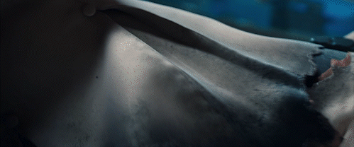
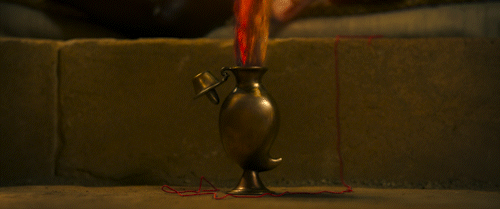
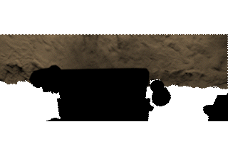
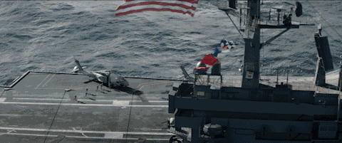

FX Technical Director — Sydney
Hi, I'm Fuad.
An FX Technical Director in Sydney. I make the sandstorms, snow, dust, sparks and glass for feature films — built in Houdini, engineered to hold up across a whole sequence.
An FX Technical Director in Sydney. I make the sandstorms, snow, dust, sparks and glass for feature films — built in Houdini, engineered to hold up across a whole sequence.




I like to design systems that work across entire sequences from ingest to collision processing, simulation setup, rendering, packaging and slapcoming.
I'm an FX Technical Director with 5 years of experience delivering FX with Houdini in production, shaped across DNEG Sydney and Fin Design + Effects. Before VFX, I studied interaction design and creative technology across four continents — including Parsons NYC and LMU Munich.